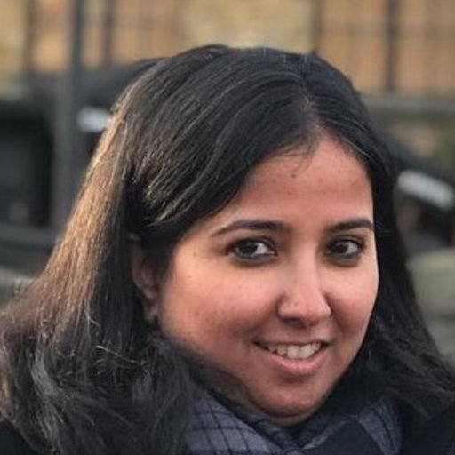

Committee
Steering, Organising, and Programme Committees
Steering Committee

Steering Committee
Dame Wendy Hall
DBE, FRS, FREng · Regius Professor of Computer Science
Director, Web Science Institute
University of Southampton

Steering Committee
Noshir Contractor
Jane S. & William J. White Professor of Behavioral Sciences
McCormick School of Engineering
Northwestern University

Steering Committee
S. Rajagopalan
Professor & Head, IIITB Innovation Centre
MOSIP Initiative
IIIT Bangalore

Organising Committee


PC Co-Chair
Dr. Bidisha Chaudhuri
Faculty of Humanities
Departement Mediastudies
University of Amsterdam, Netherlands.

PC Co-Chair
Dr. Sakthi Balan Muthiah
Professor, Dept. of Computer Science & Engineering
Shiv Nadar University, Chennai